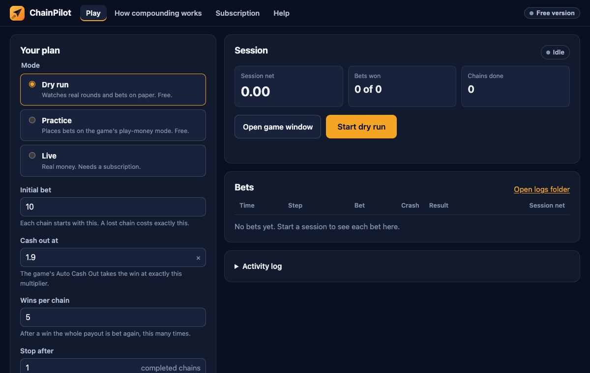

Exact cash-outs
It uses the game's own Auto Cash Out, so every win is taken by the game's server at exactly your multiplier. No click delay, even if your internet drops.
For {{game.name}} · Windows 10 and 11
A compounding autopilot for Aviator. It bets, cashes out at your multiplier, rolls the winnings into the next round, and stops at your limits. No predictions and no promises: your plan, played with discipline.
Simulator, dry run and practice mode are free. Live betting from {{currency}} {{lowestPrice}}.

It uses the game's own Auto Cash Out, so every win is taken by the game's server at exactly your multiplier. No click delay, even if your internet drops.
After a win the whole payout rides on the next round, for as many wins as you choose. A loss costs only the chain's first bet.
A loss limit, a time limit and a target. The session stops by itself. No "one more round".
See what your settings do over thousands of sessions before you risk anything, including how often they lose.
Watch real rounds with paper bets, or let it play the game's play money. Both free, forever.
A spreadsheet of every bet: stake, crash point, result and running total. You always know where you stand.
Nobody can. Each crash point is random and fixed by the game before the round starts. Apps that claim to predict Aviator are scams.
The casino states a {{rtpPercent}} return. On average every bet loses {{edgePercent}} of its stake, whatever your multiplier or staking plan. Compounding changes the shape of your results (many small losses, rare big wins), not their direction. Most sessions end down.
Casinos usually forbid bots, and using one can get your account restricted. Check your casino's terms and your local law.
Download the installer and run it. You need Windows 10 or 11, and Chrome or Edge.
Set your plan, run the simulator, then a dry run or practice on the real game. No payment needed.
Pick a plan in the app, approve the MTN MoMo prompt on your phone, and live betting unlocks straight away.
The simulator, dry run and practice mode are free. A subscription unlocks live betting on one computer.
{{{planCards}}}Pay with MTN MoMo. Renewing early adds the new days on top of the ones you have left.
No tool can promise that, and we don't. On average you lose about {{edgePercent}} of every bet. With compounding you will sometimes complete a chain and win many times your stake, and much more often lose a chain's first bet. The simulator shows what to expect from your settings.
No. It doesn't read, predict or influence rounds. It plays the plan you set, round after round, and keeps to your limits.
{{game.name}} (the version provided by Fun Games Live). It doesn't work on other sites or other versions of the game.
A Windows 10 or 11 PC (64-bit), Google Chrome or Microsoft Edge, an internet connection, and your own account at the casino.
With MTN MoMo. In the app (or on our subscribe page) enter your MoMo number and approve the prompt on your phone with your PIN. Your subscription is tied to your computer's machine ID, which the app shows you.
No, each subscription works on one computer. Changing computers? Here's what to do.
We update {{name}}. Small fixes download automatically when the app starts; bigger ones come as a new version on the download page.
If {{name}} can't run on your computer, contact us within 7 days of paying. See the terms.